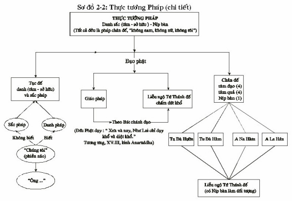

|
Giáo trình Thiền
Minh Sát Tuệ Tác giả: Thiền Sư Achaan
Naeb
2.3. THẢO LUẬN SỰ TU TẬP 2.3.1. Sự thấu hiểu phương pháp tu tập dẫn đến Ariya sacca (Tứ diệu đế) 1. Khổ đế (dukkha): Ở từng tư thế, chúng ta nhận thấy sự khổ. Ðây là khổ thọ (Vedanā dukkha) và hành Khổ (dukkha Sankhāra), dẫn đến khổ đế (sắc pháp và danh pháp là đau khổ). 2. Tập đế (Sumudaya-sacca): Tham ái - Taṇhā là nhân của khổ. Trong khi nhận biết về oai nghi ngồi, v.v... (Trong khoảnh khắc hiện tại), Tuệ giác, Thiền Minh Sát xuất hiện, và người ta có thể đoạn trừ tà kiến đó, "hành giả" đang ngồi tham thiền, thân kiến (sakkha - Diṭṭhi), ái trong vô sắc- (ViBhavataṇhā). 3. Diệt đế (Nirodha-Sacca): Nhiều phiền não càng dập tắt, chúng ta càng đạt đến sự diệt khổ (Nirodha). Ðiều này có thể là rất ngắn ngủi (Tadaṇganirodha) [1] khi ở trong khoảnh khắc hiện tại, hoặc thường còn, khi đã giác ngộ hoàn toàn (samuched nirodha). Nếu ái dục bị đoạn diệt thì khổ cũng được dập tắt, vì ái dục là nhân của khổ. Khi nhân bị đoạn diệt thì quả (khổ) cũng bị đoạn diệt. Như thế chúng ta nhận ra được Tứ Diệu Ðế. Ðiều này tùy thuộc vào năng lực của Tâm đạo (magga citta). Tâm đạo là điều kiện diệt trừ phiền não. (Xem 1.6.1. "Thực tướng pháp"; 3.1 tuệ thứ 14) 4. Ðạo đế (Magga Sacca): Trong khi hành giả có chánh niệm về sắc pháp trong khoảnh khắc hiện tại, chúng ta đang trau dồi Giới, Ðịnh và Tuệ, là Bát Chánh Ðạo, hoặc Ðạo đế. Chúng ta càng nhận thức được sự khổ bằng trí tuệ thì chúng ta càng trau dồi Bát Chánh Ðạo. 2.3.2. Những hình thức khổ trong khi thực tập Thiền Minh Sát Sắc pháp: Khổ Thọ (Vedanā dukkha). (sự đau đớn thân xác, khó chịu). Hành khổ (dukkha Sankhāra), (sự đau đớn được thay đổi hoặc được điều trị. Ðiều này khó nhận ra hơn khổ thọ). Danh và sắc: Tướng khổ (dukkha Lakkhana). Khổ đế (dukkha Sacca) Khổ thọ là sự khổ bình thường, được hành giả cảm nhận ở các tư thế. Trước hết, hành giả phải quan sát khổ thọ trước, bởi vì người ta dễ dàng nhận thấy sự khổ hơn ở trong 4 oai nghi có mặt ở mọi lúc. Khi hành giả nhận ra khổ tho,ï vị này sẽ thấy được danh sắc bị khổ thọ buộc phải thay đổi các tư thế suốt cả ngày. Hành khổ là sự khổ tiếp tục diễn ra trong tư thế mới buộc phải thay đổi từ tư thế cũ. Nó cũng là hành động để duy trì cơ thể phải hành động như thế mất cả ngày, chẳng hạn như hỉ mũi, làm cho hết đói, hít vào thở ra v.v... Tướng khổ là những đặc tính của danh và sắc pháp. Chúng có cùng những đặc tính như tất cả vạn vật: vô thường, khổ não và vô ngã. Ðiều này chỉ có thể nhận ra bằng Thiền Minh Sát. Ba đặc tính (tam tướng) này được nhận ra trong tuệ thứ tư (Tuệ sinh và diệt). Khổ đế là Ðế thứ nhất (dukkha cacca). Chân lý của khổ. Khổ đế là danh và sắc pháp. Khi người ta nhận ra khổ đế, thì cũng nhận ra được các chức năng khác của Tứ Diệu Ðế. 2.3.3. Những câu hỏi 1. Phiền não về "ngã" đi vào ở đâu? Nó đi qua danh pháp (cảm nhận), ví dụ danh pháp cảm nhận rằng, đó là "tôi" đang ngồi, sự ngồi của cái ngã. Sự tu tập là để nhận ra cái chân lý đó là oai nghi ngồi. Nó dùng hết nỗ lực, chánh niệm và tỉnh giác để thấy rằng oai nghi đang ngồi. 2. Ðiều gì biết được đó là oai nghi ngồi? Ba danh pháp (nhiệt tâm tinh cần, chánh niệm và tỉnh giác) biết được đó là oai nghi ngồi. 3. Mục đích sự nhận biết về 4 oai là gì? a) Là nhận biết về tư thế, và nhận biết đó là oai nghi ngồi, có thể đoạn diệt tà kiến cho rằng "hành giả" đang đứng, đang ngồi v.v... - Và điều này biểu thị anata (vô ngã). b) khi oai nghi ngồi gặp phải sự đau đớn, chúng ta có thể thấy khổ. Khi khổ khiến cho nó cần thiết để thay đổi, đây là vô thường. Vô thường có nghĩa là chúng ta không thể lưu lại trong cùng một tư thế quá lâu. Cũng như khi chúng ta biết được oai nghi ngồi (anatta), chúng ta tự động nhận thấy hai đặc tính (tướng) khác, khổ và vô thường (bằng trí văn và trí tu). 4. Tại sao chúng ta theo sự đau đớn từ tư thế cũ đến tư thế mới? (Ví dụ, từ oai nghi ngồi sang oai nghi đứng). Khi oai nghi ngồi gặp cơn đau, hành giả (yogi) phải ghi nhận rằng oai nghi ngồi cảm thấy đau đớn. Khi hành giả thay đổi sang oai nghi đứng, hành giả phải theo dõi cơn đau để ghi nhận rằng tư thế ngồi vẫn còn đau đớn. Khi cơn đau được điều trị, hành giả có thể nhận thấy rằng tư thế mới là để điều trị sự khổ, và điều này sẽ ngăn ngừa phiền não: việc không thích tư thế cũ hoặc thích tư thế mới. Phiền não được ngăn chặn vì chúng ta biết rằng không có "chúng ta" ở tư thế cũ hoặc mới. Chỉ có oai nghi ngồi và đứng. Khi hành giả có tác ý đúng đắn như thế này, sự việc sẽ được nhận ra rằng ngay cả "một" oai nghi (đứng, đi, v.v...) cũng không hạnh phúc. Bởi vì sự thay đổi từ mới sang cũ, liên tục với tác ý; hành giả sẽ nhận thức được chân lý: rằng bốn oai nghi đang che giấu chân lý của khổ (khổ đế). 5. Tại sao chúng ta nói "oai nghi ngồi" "oai nghi đứng" v.v...? Bởi vì oai nghi không giống nhau ở mỗi tư thế hoặc ngay cả trong mỗi tư thế. Oai nghi ngồi là một oai nghi, oai nghi đứng là một oai nghi khác v.v... Ngay cả danh pháp biết được oai nghi ngồi thì khác biệt với danh pháp biết oai nghi đứng. Bởi vì sự việc này danh sắc sinh và diệt chớp nhoáng, và không bao giờ giống như nhau. Sự hiểu biết này sẽ giúp hành giả nhận thấy rõ ràng sự tác động (ghanasana) của danh và sắc dẫn đến tà kiến cho rằng danh sắc là "chúng ta", là ngã (xem 1.11, "Ghanasaññā"). Những câu hỏi hành giả (yogi) có thể tự đặt ra cho mình
Oai nghi ngồi, có phải vô thường hay thường còn?
Làm sao chúng ta biết?
Chúng ta có cái gì tạo ra sự khổ?
Danh pháp vô thường hay thường còn?
Làm sao chúng ta biết?
Danh pháp có khổ đau hay không?
Sự khổ của danh pháp được biểu thị như thế nào? Sắc pháp và danh pháp luôn luôn vô thường và khổ. Do đó nó không có ngã; do đó người ta không thể kiểm soát nó được; do đó nó không phải là sắc pháp". Khi hành giả nhận thức được điều này, hành giả thấy rõ pháp: pháp mà hành giả thấy là khổ. Chính khổ này dẫn đến khổ - đế. Khổ đế là Thánh Ðế hành giả không thể điều trị khổ trong danh và sắc ngoại trừ tạm thời. Cả danh lẫn sắc đều sanh diệt rất nhanh, và chúng ta không thể sửa đổi nó.
Những điều gì là oai nghi?
Quan sát điều gì trong oai nghi ngồi? 2.3.4. Xem xét sắc và danh Ðiều quan trọng là hành giả hiểu rằng sắc pháp và danh pháp phải luôn luôn là đối tượng của sự tu tập. Thậm chí với sự tinh cần (atapi), hành giả không thể thành công nếu không có sắc pháp và danh pháp luôn luôn trong sự tỉnh giác hoặc sự nhận biết của vị này. Tuy vậy, sự tu tập không quá khó khăn lắm, nếu hành giả thật sự hiểu rõ sự tu tập. Hành giả cần phải xem xét sắc pháp và danh pháp thật trọn vẹn trước khi tu tập. Như vậy hành giả sẽ dễ dàng nhận thức đó là cái nào [2] . Ðiều này giống như việc tập đọc: người học trò phải biết mẫu tự trước khi cậu ta có thể đọc. Tương tự, hành giả phải biết sắc pháp và danh pháp để vị này có thể tu tập có kết quả. Nếu chúng ta không có danh sắc là một đối tượng liên tục trong sự tu tập, ví dụ, chúng ta sẽ tu tập với ý tưởng là "Tôi đau khổ, và chúng ta không thể loại trừ ý niệm về cái ngã. 2.3.5. Samadhi - Ðịnh Trong sự tu tập này tốt hơn đừng có quá nhiều định: Ðôi khi với tư thế ngồi, hành giả sẽ chỉ biết được tư thế ngồi, chứ không phải tư thế ngồi, hoặc ở trong những trường hợp quá độ thậm chí hành giả sẽ không nhận biết được tư thế. Ðiều này bởi vì sự định tâm (samadhi) quá mức. Ðể giảm bớt tập trung này, một số bài tập năng động rất ích lợi: làm các công việc, đi bộ nhanh, ngay cả chạy. Ở trong bất cứ trường hợp nào, nếu có quá nhiều sự tập trung ở bất cứ tư thế nào, hành giả nên thay đổi tư thế đó. Về đề mục thiền định. Thiền sư Āchan Naeb nói "thiền định thì có niệm xứ sẽ không dẫn đến Abhijjhā (sự ham muốn), bởi vì nó dẫn đến trí tuệ - trí tuệ này nhận thức được khổ (đây là một phương pháp để nhận biết nếu sự tu tập của người đó là đúng). Không có niệm xứ thì"Thiền định- Samàdhi không giúp chúng ta an lạc, bởi vì thiền định đó không tinh khiết. Thiền định đó có phiền não. Mặc dù nó tạo nên an lạc, nó không thể đoạn trừ Vipallāsa (sự nhận thức sai lầm). Loại thiền định này là (Sankhāra khandha) hành uẩn và như thế một phần của 5 uẩn (danh và sắc) không thể diệt khổ được - nghĩa là đạt được Níp bàn (Nibbāna) cũng là danh pháp, nhưng nó là nicca (thường còn, trường tồn) và sukha (hạnh phúc) bởi vì nó không phải là một trong 5 uẩn". Khoảnh khắc tư tưởng ngắn ngủi là Níp bàn, như vậy không có cảm giác [3] . Ðôi lúc hành giả sẽ có nhiều định khiến vị này sẽ mất đi cảm nhận đó là tư thế ngồi. Nhưng vị này sẽ nghĩ rằng mình cảm nhận tư thế ngồi, bởi vị này thiếu sikkhati (sự học hỏi, tìm hiểu để bảo cho vị này rằng không còn cảm nhận tư thế ngồi nữa. Cũng như thế, nếu mất đi học hỏi, hành giả có thể cảm thấy khổ nhưng không nhận thức được tư thế ngồi đó có đau khổ. Vị này sẽ nghĩ rằng "chính bản thân mình" cảm nhận khổ, vì thế vị này sẽ tiếp tục tu tập với ý tưởng là "tôi" ngồi tham thiền, đau đớn v.v... và sẽ không thể đoạn trừ tà kiến về ngã. Hành giả phải ghi nhớ rằng tư thế không chỉ là "sắc pháp", nhưng chính là tư thế ngồi, tư thế đứng v.v... Ngược lại vị này sẽ nghĩ rằng tư thế ngồi, và đứng đều giống nhau, v.v... Nếu vị này nghĩ như vậy, vị này không thể tiêu diệt cái ý tưởng của "sự tác động", và hành giả sẽ nghĩ rằng cơ thể là chính của vị này. Ðầu tiên, hành giả (yogi) biết được tư thế ngồi với tác ý; sau đó vị này quan sát tư thế ngồi với ba danh pháp (nhiệt tâm tinh cần, chánh niệm và tỉnh giác). Khi sự đau đớn xuất hiện, ba danh pháp biết đó là tư thế ngồi phải chịu đau đớn. Khi hành giả thay đổi tư thế, tác ý biết sự thay đổi là điều trị sự khổ, và tác ý này ngăn chặn ham muốn- Abhijjhā và không ham muốn- domanassa khi xâm nhập sự thay đổi tư thế. 2.3.6. Uddhacca: Tâm phóng dật (vẩn vơ) Một nguyên nhân của tâm vẩn vơ là có quá nhiều atapi (nhiệt tâm tinh cần). Ðiều này khiến cho hành giả thúc đẩy tâm phóng dật làm cho nó tồi tệ hơn. Tâm phóng dật là danh pháp; tâm phóng dật xuất hiện trong tâm là chuyện bình thường và cũng có trong Tứ niệm Xứ (Satipaṭṭhāna), bởi vì nó là vô thường, khổ não và vô ngã. Tâm vẩn vơ dẫn dắt tâm đến việc không thể kiểm soát được (natta). Mục đích của sự tu tập là diệt trừ lòng ham muốn và không ham muốn với nhiệt tâm tinh cần, chánh niệm và tỉnh giác. Nếu hành giả thích định tâm, đó là ham muốn, nhưng khi hành giả không thích phóng dật khi ấy nó phát sinh, bởi vì không có sự định tâm (tập trung), điều này tạo nên không ham muốn. Nói một cách khác, vị này không thể diệt trừ ham muốn hoặc không ham muốn. Vì vậy tâm phóng dật không phải là ham muốn hoặc không ham muốn. Hành giả tu tập để phát triển thiện pháp. Thay vào đó, vị này gặp phải akusala (bất thiện). Vị này có sự chán ghét tâm phóng dật. Sự chán ghét này bởi thiếu trí tuệ, đặc biệt là khéo tác ý (Cetanā) . Tác ý biết tâm phóng dật là danh pháp, tâm phóng dật thì tự nhiên, bởi vì nó vô thường, khổ, và vô ngã. Tâm phóng dật xảy ra bởi ba danh pháp không kiểm soát được ở hiện tại. Khi hành giả nhận thức được tâm phóng dật là danh pháp, sẽ biến mất và danh pháp sẽ trở lại với khoảnh khắc hiện tại. Ðừng đi theo "câu chuyện" (rèn luyện các ý tưởng) của tâm phóng dật, hoặc điều này sẽ đưa hành giả phải đi xa với khoảnh khắc hiện tại. Nếu hành giả biết "câu chuyện" hành giả không có sự tỉnh giác. Nếu hành giả có tỉnh giác, hành giả sẽ không biết câu chuyện. Ðơn giản nhận ra nó là tâm phóng dật và tâm sẽ trở lại với khoảnh khắc hiện tại. Khi hành giả trở lại với khoảnh khắc hiện tại, vị này sẽ thấy được oai nghi ngồi rõ ràng. Sự việc này là vì hành giả không nỗ lực nhận thấy oai nghi (không có phiền não). Ðây là tâm có chánh niệm tỉnh giác và cần được duy trì, nhưng không nên ép buộc nó. Sự tu tập này là quan sát danh và sắc giống như một khán giả; đừng cố gắng thay đổi hoặc kiểm soát chúng. Sau đó cần có thêm nhiều kinh nghiệm hơn, tâm vẩn vơ (tâm giống như con khỉ) trở thành người thuần phục và hành giả sẽ ở trong khoảnh khắc hiện tại càng ngày càng nhiều hơn. Hành giả sẽ dễ dàng nắm bắt khoảnh khắc hiện tại hơn. 2.3.7. Sự pha tạp Bị đau ốm không phải sự trở ngại của việc tu tập. Nhưng hành giả hầu như sẽ không có thể cảm thấy được oai nghi, bởi vì bệnh tật sẽ quá mạnh mẽ. Hành giả phải theo dõi bệnh tật, xao lãng tư thế, và nhận ra rằng sắc thân là khổ [4] đó là khổ đế. Và vị này cũng thấy rằng sắc pháp là vô ngã; người ta không thể kiểm soát được nó [5] . Làm cách nào hành giả biết được khi tâm có chánh niệm tỉnh giác phát sinh (ở khoảnh khắc hiện tại)? Khi tâm đã có chánh niệm, tỉnh giác phát sinh, nó biết được tư thế (đây là chánh niệm), và tâm biết được tư thế là oai nghi ngồi, v.v... (đây là tỉnh giác). Khi chánh niệm, tỉnh giác phát sinh, sự cảm nhận sẽ là một điều không còn sự lo lắng, không bất an, và không có sự chán nản trong việc tu tập. Nếu hành giả có quá ít sự hăng hái, kết quả sẽ là sự lười biếng hoặc không có sự chú tâm đến tu tập. Quá ít sự hăng hái dẫn đến sự thiếu hiểu biết sự tu tập, không có khả năng thấy được khổ và sự cần thiết để loại trừ phiền não; và không có khả năng để nhận thấy rằng chúng ta có thể chết bất cứ lúc nào và phải tận dụng nó với bất cứ thời gian nào mà chúng ta có được. Hành giả cũng nên nhớ rằng đức Phật đã để lại một di sản giáo pháp cho chúng ta, đó là Satipaṭṭhāna (Tứ niệm xứ; do đó chúng ta nên tận dụng nó trong cuộc sống này. Người mới tu tập nên nhớ rằng sự tu tập này là một thiện pháp rất cao thượng (sự đoạn trừ phiền não), và nó có thể mất thời giờ. Ðiều này vì thiện pháp sẽ đưa hành giả thoát khỏi sự khổ - và điều này không dễ dàng. Hành giả đừng nên vội vã tìm cách đặt cho được những thành quả. Hầu hết các hành giả cũng đã tu tập sai trước đó và nó cần thời giờ để phát triển sự tu tập theo chánh pháp tốt đẹp. 2.4 KẾT LUẬN Sự tu tập đứng đắn sẽ dẫn đến kết quả đúng. Sự tu tập đúng tùy thuộc vào trí tuệ và những nghiệp tích lũy trước đó (đã có sự tu tập tốt đẹp ở những kiếp trước). Ðiều quan trọng trong sự tu tập là thay đổi tà kiến hoặc ý tưởng sai lạc cho rằng danh sắc là "chúng ta", hoặc có cái ngã. Nếu hành giả không thể thay đổi được tà kiến này thì không thể đạt được tuệ (giai đoạn trí tuệ) đầu tiên - không có tuệ, đầu tiên này vị này không thể phát triển 16 tuệ và đạt được níp Bàn thật sự. Khi kết quả đúng thật xảy ra, hành giả biết được bản thân - nó giống như việc nếm đường; hành giả không cần một người thầy để dạy cho hành giả có mùi vị gì. Thời đại này là thời đại của tham ái mạnh mẽ và trí tuệ yếu kém. Bởi vì đây là thời đại vật chất đối với mọi người (không chỉ dành cho các nhà vua, như thời xưa) và kỹ thuật cao làm cho tâm của chúng ta lệch hướng rất nhiều. Những hành giả mới tu tập cho rằng mình thích tu tập và chắc chắn nhận thấy được giáo pháp (dhamma) rất nhanh, vị này sẽ thất bại. Vì điều này phiền não có một sức mạnh to lớn; nó đã tích lũy trong chúng ta lâu lắm rồi. Người sẽ loại trừ được phiền não trong tâm là người phải có sự học hỏi đúng đắn để loại trừ phiền não và phải hiểu biết được sự thực hành tu tập qua sự học hỏi những lời phát biểu xác đáng của Ðức Phật. Không có giáo lý đúng thật và sự tu tập đúng đắn để chấm dứt khổ, người ấy không thể đạt được Níp Bàn. Thiền sư Achaan Naeb nói rằng sự tu tập Thiền Minh Sát thành công là rất khó khăn hơn việc đi trên một sợi dây; nếu hành giả ngã xuống, hành giả phải tiếp tục đứng lên và nỗ lực trở lai. Ðây là sự hăng hái (atapi), hướng thẳng đến bằng sự giúp đỡ của chánh niệm tỉnh giác để có chánh niệm ở từng khoảnh khắc. Sự duy trì con đường Trung Ðạo (không thích hoặc không ưa) đòi hỏi nhiều sự quân bình cẩn thận. Nó thật khó khăn, nhưng có thể đạt được - nếu hành giả thật lòng muốn diệt khổ.
Có rất ít người đạo đức Những Phần Minh Họa
Sơ đồ 2-1 Bản tóm tắt các căn (Ayatana) và đề mục
thiền quán
Sơ đồ 2-1
Lý do: Chúng ta nghĩ rằng "Tôi thấy" và tà kiến, phiền não, này cần phải đoạn diệt bằng "nhãn thức" (Sabhava) - là chánh kiến Chúng ta nghĩ rằng "Tôi nghe" và tà kiến, phiền não này cần phải đoạn diệt bằng "nhĩ thức" (Sabhava) - Chánh kiến Chúng ta nghĩ rằng "Tôi đang ngửi" và tà kiến, phiền não này phải được đoạn diệt bằng "hương là sắc pháp (Sabhava) - đó là Chánh kiến Chúng ta nghĩ rằng "Tôi đang nếm vị ngọt"; "Tôi đang nếm vị chua" và tà kiến, phiền não này, cần được đoạn trừ bằng "Vị là sắc pháp" (Sabhava) - là Chánh kiến Chúng ta nghĩ rằng "Tôi nóng". Tôi lạnh "tà kiến phiền não này cần được đoạn diệt bằng "sắc pháp là nóng (Sabhava) - Chánh kiến Chúng ta nghĩ "Tôi ngồi, tôi đứng" và tà kiến, phiền não này cần được đoạn diệt bằng "oai nghi ngồi" v.v... (Sabhava) là Chánh kiến: chúng ta nghĩ "Tâm tôi đang vẩn vơ - Tôi yêu v.v... và tà kiến này, phiền não. Sự tu tập:
Ba danh
[6]
quan sát "tâm nhãn thức" 
-ooOoo- [1] Ðoạn trừ phiền não tạm thời (Tandaganirodha) bắt đầu với tuệ Danh sắc (Nāma rūpa-paricchedanana) ở nơi đây nó loại trừ tà kiến về "cái Tôi" và tiếp đến tuệ Thuận thứ-anulomanana, ở đây sự đoạn diệt sau đó trở thành thường còn (xem 3.1, "Tuệ 16"). [2] Ðể biết nên dùng sắc pháp hay danh pháp là những đối tượng ở lục căn hay căn xem Sơ đồ 2-1, "Phần tóm tắt câu Ayatana (Lục căn) ở cuối Phần Tu Tập [3] Khi Udayi hỏi ngài Sariputta làm thế nào mà Níp bàn có thể hạnh phúc, và không có cảm thọ, ngài Sariputta đáp lại "Thật chính xác không có cảm thọ đó là hạnh phúc" (Anguttara-Nikāya, Nibbāna-Sutta) [4] Sắc pháp, được xem xét là bệnh, thì không còn là oai nghi ngồi v.v...,nhưng trở thành sắc thân (sắc là thân) [5] Ðức Phật dạy cho một người tại gia, Nakun, khi bệnh tật xảy ra trong thế gian tầm thường này, thân bất an thì tâm cũng vậy, nhưng đối với một người đã đoạn trừ được tà kiến (ảo tưởng về Ngã - 20 loại của) thân thì bất an nhưng tâm thì không [6] (a) Ba danh đề cập đến nhiệt tâm, chánh niệm và tỉnh giác. (b) Sự Nghe là chánh niệm. Biết được tâm nhĩ thức là tỉnh giác -ooOoo- Ðầu trang | Mục lục | 1.1 | 1.2 | 1.3 | 1.4 | 2.1 | 2.2 | 3.0 | 4.1 | 4.2 | 4.3 | 5.0 |
|||||||||||||||||||||||||||||||||||
Chân thành cám ơn Tỳ kheo Thiện Minh đã gửi tặng bản vi tính (Bình Anson, 07-2003).
[Trở về
trang Thư Mục]
last updated: 28-08-2003